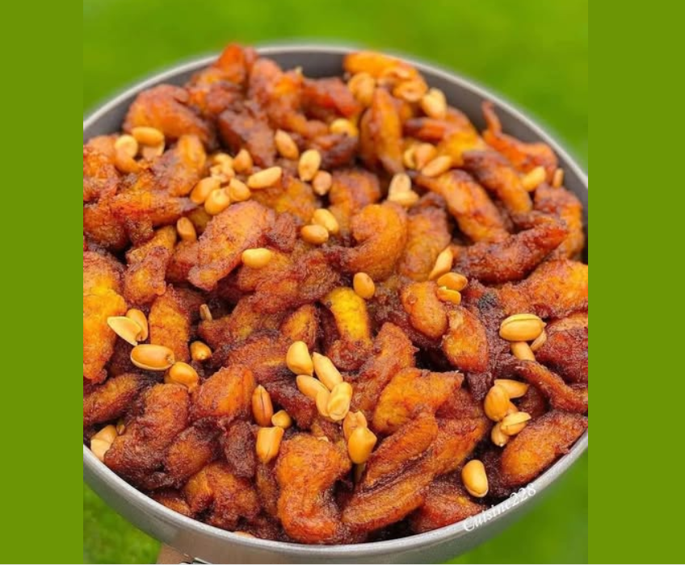

Kelewele Recipe

Description
Kelewele, A Uniquely Ghanaian Plantain Snack
It is a true Ghanaian treat. These are fried plantain bites marinated in a ginger, onion salt, and chili paste.
Today you will find a variety of recipes, but the recipe I will share with you today comes from my very own mother.
Ingredients
- 2 ripe plantains
- 2 inches ginger
- 1 teaspoon anise seed
- 4-6 grains of selim
- 1/2 small onion
- Chilli pepper as required
- 2 dashes salt
- Oil for frying
- 2 dashes salt
Steps
- Remove plantain peels and cut into desired sizes.
- Blend or grind or the spices together.
- Pour over plantains and add salt.
- Heat oil in a deep fryer. When hot, drop in plantains.
- Fry till plantains are golden.
- Serve with roasted groundnuts.